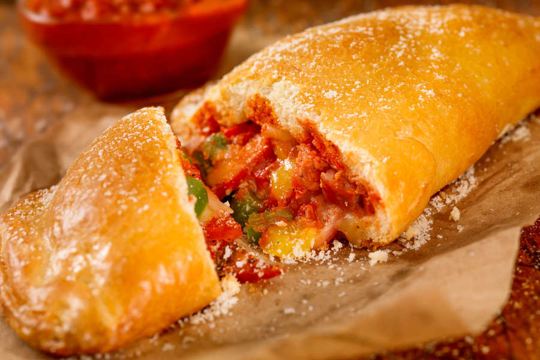

Calzone

Description
A calzone (UK: /kælˈtsoʊni, -neɪ/, US: /kælˈzoʊn, -zoʊneɪ, -ni/, Italian: [kalˈtsoːne]; "stocking" or "trouser") is an
Italian oven-baked folded pizza, often described as a turnover, made with leavened dough. It originated in Naples in the
18th century. A typical calzone is made from salted bread dough, baked in an oven and is stuffed with salami, ham or
vegetables, mozzarella, ricotta and Parmesan or pecorino cheese, as well as an egg. Different regional variations in or
on a calzone can often include other ingredients that are normally associated with pizza toppings. The term usually
applies to an oven-baked turnover rather than a fried pastry (i.e. panzerotti), though calzoni and panzerotti are often
mistaken for each other.
Ingredients
- 1 (.25 ounce) package active dry yeast
- 1 cup warm water
- 1 tablespoon olive oil
- 1 teaspoon white sugar
- 1 teaspoon salt
- 2 ½ cups all-purpose flour, divided
- 1 teaspoon olive oil
- ½ cup ricotta cheese
- 1 ½ cups shredded Cheddar cheese
- ½ cup diced pepperoni
- ½ cup sliced fresh mushrooms
- 1 tablespoon dried basil leaves
- 1 egg, beaten
Steps
-
To Make Dough: In a small bowl, dissolve yeast in water. Add the oil, sugar and salt; mix in 1 cup of the flour until
smooth. Gradually stir in the rest of the flour, until dough is smooth and workable. Knead dough on a lightly floured
surface for about 5 minutes, or until it is elastic. Lay dough in a bowl containing 1 teaspoon olive oil, then flip
the dough, cover and let rise for 40 minutes, or until almost doubled.
-
To Make Filling: While dough is rising, combine the ricotta cheese, Cheddar cheese, pepperoni, mushrooms and basil
leaves in a large bowl. Mix well, cover bowl and refrigerate to chill.
- Preheat oven to 375 degrees F (190 degrees C).
-
When dough is ready, punch it down and separate it into 2 equal parts. Roll parts out into thin circles on a lightly
floured surface. Fill each circle with 1/2 of the cheese/meat filling and fold over, securing edges by folding in and
pressing with a fork. Brush the top of each calzone with egg and place on a lightly greased cookie sheet.
- Bake at 375 degrees F (190 degrees C) for 30 minutes. Serve hot.
You can find the original recipe here